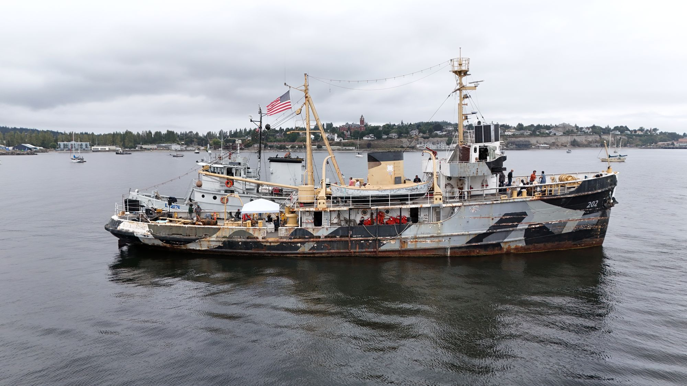

Tug Comanche Historical Rescue Foundation
ATA-202 · USS Wampanoag · USCGC Comanche WMEC-202

Help keep Comanche underway
One of the last WWII museum ships in the world still moving under her own power — crewed entirely by volunteers on Puget Sound.
Why it matters
A living ship, not a static exhibit
Built in 1944 as a Navy ocean tug and later a Coast Guard cutter, Comanche is today a floating classroom for maritime history, hands-on trades and youth mentorship — and she still gets underway for community events and partner cruises.
$100
per mile underway
$250
per day at the pier
Those are bare operating costs — fuel, moorage, consumables. Nothing in them for the maintenance, haul-out and insurance an 80-year-old ship needs. That is what your gift covers.
Every dollar goes to the ship. Scan the code, or give at tug202.org.

Scan to give
givebutter.com/support-ata-202-comanche-x0xpns
tug202.org
Tug Comanche Historical Rescue Foundation is a Washington 501(c)(3) public charity, EIN 39-5018917. Contributions are tax-deductible to the extent allowed by law. Donations are always voluntary and never a condition of coming aboard; Comanche is not a charter vessel and does not offer paid passenger service. · tug202.org · info@tug202.org